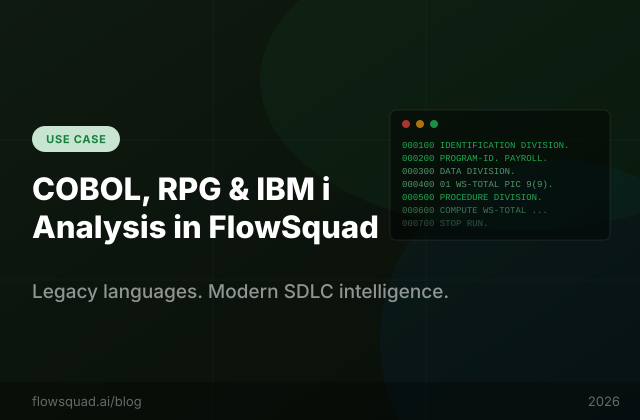

Most modern SDLC tools quietly drop the ball on COBOL and RPG. FlowSquad doesn't — here's exactly what you get, how it works, and what honest limitations to expect.
There are an estimated 800 billion lines of COBOL in production worldwide, processing over $3 trillion in daily commerce. IBM i (formerly AS/400) runs the back-office of most of the world's banks, insurers, and retailers. RPG — the native programming language of IBM i — is still being actively written and maintained by tens of thousands of developers.
Yet when those organisations evaluate modern SDLC tools, they almost always hit the same wall: the tool either silently ignores their COBOL and RPG files, or worse, claims to support them and then fails to parse anything meaningful. Neither outcome is acceptable when your payment processing engine is written in 1982-era COBOL and your team needs to generate user stories from it.
This article explains exactly what FlowSquad does — and does not do — for these languages, so you can make an informed decision before you commit to an evaluation.
FlowSquad uses tree-sitter for AST-level parsing of 29 modern languages. Tree-sitter is a parser generator that produces concrete syntax trees from source code — enabling precise extraction of function signatures, class hierarchies, complexity metrics, and symbol graphs. It is fast, battle-tested, and language-agnostic.
The catch: tree-sitter needs a grammar file for each language. While the tree-sitter ecosystem has grammars for over 100 languages, production-grade grammars for enterprise COBOL dialects (IBM COBOL, COBOL/400, Micro Focus COBOL) and RPG (fixed-format RPG III, free-format RPGLE, SQL/RPG) do not exist in a mature state. Community experiments exist but they are incomplete — they parse simple programs and break on real enterprise code that uses vendor-specific extensions, fixed-column formatting, and decades of accumulated idioms.
Rather than bundle an incomplete grammar that silently fails on your actual codebase, FlowSquad takes a different approach.
For languages without a reliable tree-sitter grammar, FlowSquad routes source files directly to LLM-based semantic analysis, bypassing the AST parse step entirely. This is not a workaround — it is actually the better approach for COBOL and RPG, for a specific reason.
PROCEDURE DIVISION. An LLM can tell you what the procedure does.
| Language / Artifact | File Extensions | File Discovery & LOC | Security Scan | LLM Semantic Analysis | AST Metrics |
|---|---|---|---|---|---|
| COBOL | .cbl .cob .cobol .sqlcbl | ✓ | ✓ regex | ✓ | — |
| RPG / RPGLE | .rpg .rpgle .sqlrpgle | ✓ | ✓ regex | ✓ | — |
| CL / CLLE | .clle .clp .clp38 | ✓ | ✓ | ✓ | — |
| REXX | .rexx .rex | ✓ | ✓ | ✓ | — |
| DDS (Display/Printer/LF) | .dds .dspfdds .prtfdds .lfdds .pfdds | ✓ | ✓ | ✓ | — |
| IBM i Binder / Menu / Msg | .bnd .mnusrc .msgf .cmdsrc .pnlgrpsrc | ✓ | ✓ | ✓ | — |
| SQL COBOL / SQL RPG | .sqlcbl .sqlrpgle | ✓ | ✓ | ✓ | — |
Every one of these file types is indexed into VectorDB alongside your modern-language files. AskProduct queries work across all of them — you can ask "How does the COBOL batch job interact with the Java REST API?" and FlowSquad will retrieve relevant chunks from both codebases to construct the answer.
FlowSquad's repository walker recognises all legacy file extensions at discovery time. When you load an IBM i project via Git URL or ZIP upload, COBOL, RPG, CL, REXX, and DDS files are counted, sized, and included in the language breakdown shown on the Analyze tab. Line-of-code metrics, file counts by language, and extension distribution charts all include legacy files correctly.
The security scanner runs regex-based pattern matching across legacy source files, looking for hardcoded credentials, SQL injection patterns in embedded SQL, cleartext data transmission indicators, and other OWASP-aligned issues. This is not as precise as Semgrep (which does not support COBOL or RPG), but it covers the most common vulnerability classes found in legacy enterprise code — particularly hardcoded passwords in WORKING-STORAGE and unparameterised dynamic SQL in embedded SQL RPG programs.
This is where the most value lies for legacy language users. When FlowSquad generates requirements, epics, user stories, high-level designs, or AskProduct answers, the LLM receives the raw COBOL/RPG source as context. Because the LLM genuinely understands these languages, the output quality is comparable to what you get from modern languages.
In practice, teams use this to:
COBOL and RPG source files are chunked and embedded using the same ONNX all-MiniLM-L6-v2 model used for modern languages. Because the embedding model is a general-purpose sentence transformer trained on diverse text (including technical documentation), it produces meaningful semantic vectors for COBOL and RPG source — allowing AskProduct to retrieve the most relevant code sections for a given query even when the query uses modern terminology.
For example, querying "payment processing error handling" will retrieve relevant COBOL paragraphs that deal with payment errors even if those paragraphs use legacy terminology like COMPUTE WS-PAYMENT-TOTAL and PERFORM ERROR-ROUTINE rather than modern equivalents.
Specifically, the following features that work for Tier 1 languages are not available for COBOL/RPG:
The semantic analysis and SDLC artifact generation features work well. The deep structural metrics do not. This is a known limitation and it is honest.
Many IBM i shops operate in regulated, air-gapped environments — banking, government, defence. FlowSquad's on-premise deployment mode is designed for exactly this scenario.
The full stack runs locally:
COBOL and RPG source code never leaves your network. The LLM that analyses it runs on your own hardware. This makes FlowSquad viable for environments where cloud AI tools are explicitly prohibited by policy or regulation.
Here is a representative workflow for an IBM i team using FlowSquad to support a COBOL-to-Java modernisation project:
This workflow is being used today by teams migrating IBM i applications to cloud-native Java and Python systems. FlowSquad does not write the replacement code — but it dramatically compresses the knowledge-extraction and specification phase, which typically consumes 30–40% of a modernisation project's budget.
We are tracking developments in the tree-sitter ecosystem for legacy languages. If and when a mature, production-quality grammar for IBM COBOL or free-format RPGLE reaches stability, we will evaluate bundling it to unlock Tier 1 AST metrics for those languages. We will not bundle an incomplete grammar that produces misleading metrics on real enterprise code.
Community contributions to the language support pipeline are welcome — see the FlowSquad GitHub repository for the grammar registration interface.
FlowSquad's LLM-based analysis works on any COBOL dialect because the LLM — not a hand-written grammar — does the understanding. IBM COBOL, Micro Focus COBOL, COBOL/400, and embedded SQL COBOL (.sqlcbl) have all been tested with FlowSquad. Dialect-specific extensions (EXEC SQL, EXEC CICS, IBM-specific data types) are understood by the LLM without additional configuration.
Yes. Both are recognised by extension (.rpgle for ILE RPG including free-format, .rpg for older fixed-format programs) and indexed together. The LLM handles the difference in format automatically — free-format RPGLE and fixed-format RPG IV are both understood without separate configuration.
Yes. FlowSquad indexes both the Java and COBOL source into the same VectorDB collection. AskProduct queries can retrieve context from both and the LLM can reason across the boundary — for example, answering "Which Java service triggers the COBOL PAYROLL batch job and what data does it pass?" by combining context from Java method signatures and COBOL JCL/CL definitions.
Partially. Test case generation using AST-derived entry points (which requires tree-sitter) is not available for COBOL. However, FlowSquad can generate functional test cases from the LLM-derived requirement specification — describing what inputs and expected outputs should be tested, based on the business logic the LLM extracted from the source. These are behaviour-level test cases, not unit test stubs with line-level coverage annotations.
Yes — this is a first-class supported deployment mode. FlowSquad with Ollama (local LLM), ChromaDB (local VectorDB), and ONNX Runtime (local embeddings) operates entirely offline. The only external dependency is the initial download of FlowSquad itself and the Ollama models, which can be done on a connected machine and then transferred. See the air-gapped deployment guide for full instructions.
JCL (.jcl) file recognition is on the near-term roadmap. The LLM understands JCL natively, so once the extension is registered in FlowSquad's file discovery configuration, JCL files will be indexed and available for analysis. Contact support@flowsquad.ai if this is a priority for your team — it accelerates the roadmap prioritisation.